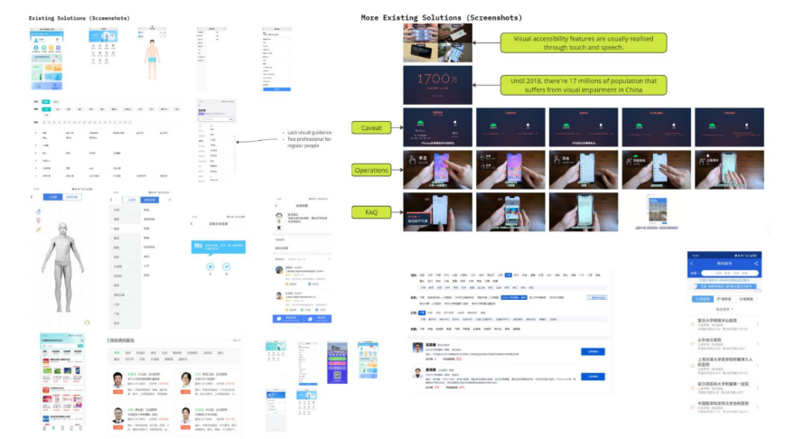

User Research Report
UI Design — Individual Project
Overview
MedMate is a user-centered healthcare mobile application concept designed to improve accessibility, self-diagnosis, and appointment efficiency for patients in China. The project focuses on enhancing digital healthcare experiences, particularly for elderly users, visually impaired individuals, and medically inexperienced patients, through iterative UX design and evaluation.
Methods & Tools
- User Interviews
- Surveys
- Usability Testing
- Figma
Screenshots
Project Details
Problem & Design Motivation
The project addresses challenges in healthcare accessibility caused by population pressure and uneven resource distribution in China. Many existing healthcare apps lack usability and accessibility, especially for elderly and visually impaired users. MedMate aims to simplify medical processes such as self-examination, appointment booking, and health record management.
User Research & Requirement Analysis
The design process began with extensive user research, including interviews with medical professionals and questionnaires targeting potential users. Insights revealed key pain points such as difficulty in identifying the correct medical department, lack of clear medical records, and poor accessibility support. These findings were translated into personas, user stories, and core use cases.
User-Centered Design Approach
An iterative design methodology was adopted, progressing through requirement analysis, prototyping, and evaluation. The project focused on two primary user groups: visually impaired users and medically inexperienced patients. Design decisions were guided by usability principles such as Nielsen’s heuristics and Shneiderman’s Eight Golden Rules to ensure clarity, feedback, and user control.
Feature Design & Prototyping
The core feature developed was a self-examination system, allowing users to select affected body areas on a human model to receive guidance. Multiple design alternatives were explored, with improvements such as precise area selection, confirmation dialogs, and undo functionality to enhance usability. Additional features included medical history tracking, health monitoring, and accessibility options like high-contrast UI modes.
Accessibility & Inclusive Design
A major focus of the project was accessibility. High-contrast visual modes were designed to support users with visual impairments, inspired by accessibility features in other domains. The project also explored solutions such as audio assistance and simplified interaction flows, though some were refined or reconsidered based on evaluation feedback.
Evaluation & Iteration
The prototypes were evaluated using heuristic evaluation, expert interviews, and SUS (System Usability Scale) testing. Results indicated that the design achieved acceptable usability (average SUS score ~69.6) but still required refinement. Feedback highlighted issues such as potential inaccuracy in self-diagnosis and the need for clearer interaction flows.
Design Challenges & Trade-offs
Balancing feature complexity with usability was a key challenge. While advanced features like AI diagnosis and scanning were explored, some were simplified due to concerns about reliability, user trust, and accessibility. The project demonstrates the importance of aligning innovation with real user needs and practical constraints.